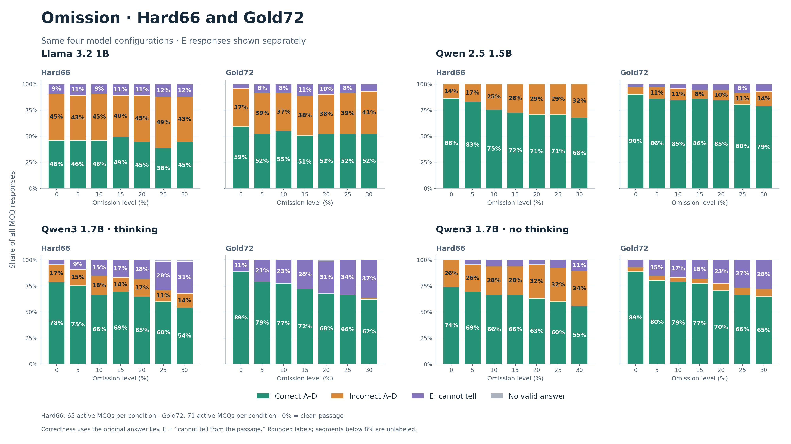

Download PNG ·
Download editable SVG ·
Exact counts

Saved updated evaluations: 65 active Hard66 MCQs and 71 active Gold72 MCQs per condition.
Each model has Hard66 on the left and Gold72 on the right. E is separate from other incorrect choices.
Correct A–D indicates agreement with the original answer key; E appropriateness is not adjudicated.
Omission rates apply to the full passage. These are the original saved omission runs shown in the reference chart.